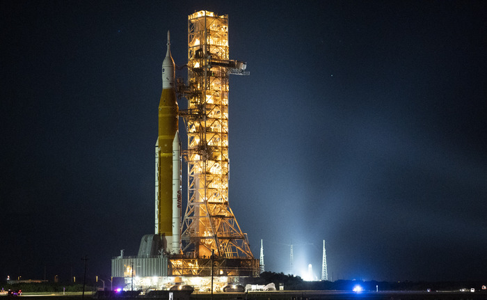

Missão Artemis 2: A humanidade voltou à Lua
1 a 10 de abril de 2026. Missão concluída com sucesso
Sobre a missão
A Artemis 2 foi a primeira missão tripulada do programa Artemis da NASA e o primeiro voo tripulado além da órbita baixa da Terra desde a Apollo 17 em 1972.
A tripulação de quatro astronautas realizou um sobrevoo ao redor da Lua a bordo da cápsula Orion, em uma jornada de aproximadamente 10 dias.
A missão foi lançada em 1 de abril de 2026, do Kennedy Space Center, na Flórida, e terminou com a aterissagem da cápsula no Oceano Pacífico, em 10 de abril.

Vídeo oficial do lançamento
Conquistas da missão
- Novo recorde de distância humana da Terra
- 406.771 km
- Superou o recorde da Apollo 13 de 1970
- Marcos históricos na tripulação
- Primeira mulher além da órbita baixa
- Primeiro afro-americano além da órbita baixa
- Primeiro não-americano além da órbita baixa
- Validação de sistemas
- Primeiro voo tripulado do foguete SLS
- Primeiro voo tripulado da cápsula Orion
- Distância total percorrida
- 694.481 milhas no total
- Sobrevoo a cerca de 8.000 km da Lua